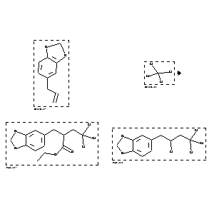

|  |
| FA | RX(1); FLST(1); RX(1) |
Reaction (1 of 1)
| Reaction ID | 1767834 |
| Reactant BRN | 136380; 1098295 |
| Reactant | 5-allyl-benzo[1,3]dioxole; tetrachloromethane |
| Product BRN | 4524942; 4448026 |
| Product | 2-benzo[1,3]dioxol-5-ylmethyl-4,4,4-trichloro-butyric acid ethyl ester; 1,2-methylenedioxy-4-(2,4,4,4-tetrachlorobutyl)benzene |
| No. of Reaction Details | 1 |
Reaction Details (1 of 1)
| Reaction Classification | Preparation |
| Yield | 35 percent (BRN=4448026); 29 percent (BRN=4524942) |
| Reagent | Pd(OAc)2, PPh3, K2CO3, CO |
| Solvent | ethanol |
| Time | 48 hour(s) |
| Temperature | 80 |
| Pressure | 30400.004 |
| Citation Pointer | 5543032; Journal; Tsuji, Jiro; Sato, Koji; Nagashima, Hideo; TELEAY; Tetrahedron Lett.; EN; 23; 8; 1982; 893-896; |
Reference (1 of 1)
| Citation Number | 5543032 |
| Document Type | Journal |
| Authors | Tsuji, Jiro; Sato, Koji; Nagashima, Hideo |
| CODEN | TELEAY |
| Journal Title | Tetrahedron Lett. |
| Language Code | EN |
| (Series) Volume | 23 |
| Number | 8 |
| Publication Year | 1982 |
| Page | 893-896 |